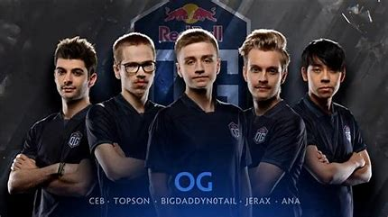
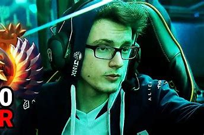
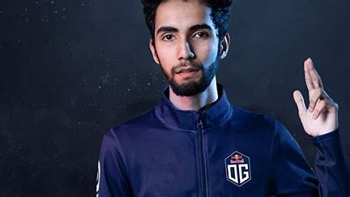

Jugadores Profesionales de Dota 2
-
N0tail (Johan Sundstein)

Johan "N0tail" Sundstein es una leyenda viviente en el mundo de Dota 2 y uno de los jugadores más exitosos de la historia del juego. Originario de Dinamarca, N0tail comenzó su carrera como jugador profesional en títulos como Heroes of Newerth antes de migrar a Dota 2. Como capitán del equipo OG, N0tail lideró a su equipo a la victoria en The International 8 (2018) y The International 9 (2019), convirtiéndose en el primer jugador en ganar dos Aegis consecutivos. Conocido por su liderazgo estratégico y su capacidad para mantener la moral del equipo alta en momentos críticos, N0tail es considerado un verdadero visionario en el competitivo de Dota 2. Su versatilidad como jugador y su compromiso con el equipo lo han consolidado como un ícono del juego.
-
Miracle- (Amer Al-Barkawi)

Amer "Miracle-" Al-Barkawi es un jugador jordano-polaco que se ha ganado el respeto de la comunidad de Dota 2 como uno de los mejores jugadores de "midlane" de todos los tiempos. Miracle- comenzó su carrera en el equipo OG, donde rápidamente se destacó gracias a su impresionante habilidad mecánica y su capacidad para llevar a su equipo a la victoria en partidas cruciales. Más tarde, se unió a Team Liquid y fue una pieza clave para que el equipo ganara The International 7 (2017), donde su desempeño con héroes como Invoker y Anti-Mage lo consolidó como un jugador excepcional. Miracle- es conocido por su calma bajo presión y su capacidad para convertir situaciones adversas en victorias heroicas.
-
SumaiL (Syed Sumail Hassan)

Syed "SumaiL" Hassan es un prodigio pakistaní que irrumpió en la escena profesional de Dota 2 con un impacto sin precedentes. A la edad de 15 años, SumaiL se unió a Evil Geniuses y ayudó al equipo a ganar The International 5 (2015), convirtiéndose en el jugador más joven en la historia del torneo en ganar el codiciado Aegis of Champions. Conocido como el "Rey del Storm Spirit" por su habilidad sobresaliente con este héroe, SumaiL es famoso por su estilo de juego agresivo y su capacidad para dominar la línea central (midlane). Su talento y su hambre de éxito lo han llevado a jugar para equipos de élite como OG y Team Secret, consolidándose como uno de los mejores jugadores en la historia de Dota 2.
Video Destacado
Mira un video sobre Dota 2: